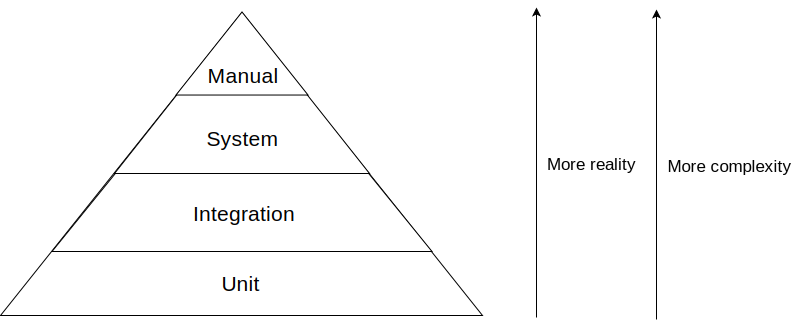
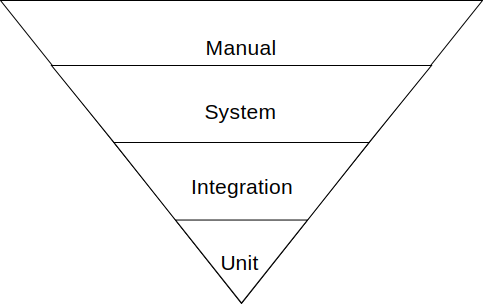
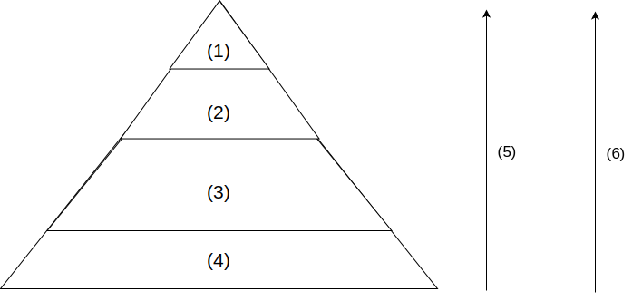

The Testing Pyramid
In previous chapters, we studied different techniques to derive test cases for requirements with single responsibilities (tested via specification-based techniques) and source code that could fit into a single unit/class (tested via structural techniques).
A large software system, however, is composed of many units and responsibilities.
In this chapter, we are going to discuss the different test levels (i.e., unit, integration, and system), their advantages and disadvantages, and the trade-offs that a tester has to make in real-world testing.
Unit testing
In some situations, the goal of the tester is to test a single feature of the software, purposefully ignoring the other units of the systems (just like we have been doing so far). When we test units in isolation, we are doing what is called unit testing.
Defining a 'unit' is challenging and highly dependent on the context. A unit can be just one method or can consist of multiple classes. Here is a definition for unit testing by Roy Osherove:
"A unit test is an automated piece of code that invokes a unit of work in the system. And a unit of work can span a single method, a whole class or multiple classes working together to achieve one single logical purpose that can be verified."
As with any testing strategy, unit testing has advantages and disadvantages.
Advantages
Firstly, unit tests are fast. A unit test usually takes just a couple of milliseconds to execute. Fast tests give us the ability to test huge portions of the system in a small amount of time. Fast, automated test suites give developers constant feedback; this fast safety net makes developers feel more comfortable and confident in performing evolutionary changes to the software system they are working on.
Secondly, unit tests are easy to control. A unit test tests the software by giving certain parameters to a method and then comparing the return value of this method to the expected result. The input values and expected result values are easy to adapt or modify in the test.
Finally, unit tests are easy to write. Unit tests do not require complicated setup or additional work. A single unit is also often cohesive and small, making the job of the tester easier.
Disadvantages
Unit tests lack "reality". A software system is rarely composed of a single class. The large number of classes in a system and the interaction between these classes can cause the system to behave differently in its real application than in the unit tests. Therefore, unit tests do not perfectly represent the real execution of a software system.
Some types of bugs are not caught. Some types of bugs cannot be caught at unit test level. They only happen in the integration of the different components (which are not exercised in a pure unit test).
System testing
Unit tests do not exercise the system in its entirety (but this is not their goal). To get a more realistic view of the software, and thus perform more realistic tests, we should run the entire software system, with all its databases, front-end apps, and any other components it has.
When we test the system in its entirety, we are doing what is called "system testing". In practice, instead of testing small parts of the system in isolation, system tests exercise the system as a whole. Note that an alternative name for system testing is black box testing because the system is a kind of black box. In other words, we do not care or actually know what goes on inside of the system ("the black box") as long as we get the expected output for a given input.
Advantages
The obvious advantage of system testing is how realistic the tests are. After all, the more realistic the tests are, the greater the chance that the system works when shipped.
System tests also capture the user's perspective better than unit tests. In other words, system tests are a better simulation of how the final user interacts with the system.
Disadvantages
System testing does, however, have its downsides.
System tests are often slow when compared to unit tests. Although we have not written any system test up until now, try to imagine what all a system test has to do, including starting and running the whole system with all its components. The test also has to interact with the real application and actions might take a few seconds to happen. Imagine a test that starts a container with a web application and another container with a database. It then submits an HTTP request to a webservice that is exposed by this web app. This webservice then retrieves data from the database and writes a JSON response to the test. This obviously takes more time than running a simple unit test, which has virtually no dependencies.
System tests are also harder to write. Some of the components (e.g., databases) might require complex setup before they can be used in a testing scenario. Think of not only connection and authentication, but also making sure that the database has all the data that is required by that test case. This takes additional code that is needed just for automating the tests.
Lastly, system tests tend to become flaky. A flaky test is a test that presents an erratic behaviour: if you run it, it might pass or it might fail for the same configuration. Flaky tests are an important problem for software development teams. After all, having a test that might pass when there is a bug or one that might fail when there is none harms the productivity of the development team. It is easy to imagine how a system test can become flaky. Think of a system test that exercises a web app. After clicking a button, the HTTP POST request to the web app took half a second more than usual (due to small variations we often do not control in real-life scenarios; Tomcat decided to do a full garbage collection at that very second, for example). The test was not expecting it to happen and thus, it failed. If the test is executed again, the web app might now take its usual time to respond and the test will pass on this try. There are just too many uncertainties in a system test that can lead to unexpected behaviour.
We discuss flaky tests more formally later in the book.
Integration testing
Unit and system testing are the two extremes of test levels. As we saw, unit tests focus on the smallest parts of the system while system tests focus on the whole system at once. However, sometimes we need something in between.
Integration testing is the test level we use when we need something more integrated (or less isolated) than a unit test but without the need of exercising the entire system.
Let us look at a real-world integration test example:
Software systems commonly rely on database systems. To communicate with the database, developers often create a class whose only responsibility is to interact with this external component (think of Data Access Objects - DAO - classes). These DAOs might contain complicated SQL code. Thus, a tester feels the need to test these SQL queries.
However, note that the tester does not want to test the entire system, only the integration between the DAO class and the database. The tester also does not want to test the DAO class in complete isolation; after all, the best way to know whether a SQL query works is to actually submit it to the database and see what the database returns back. This is an example of an integration test.
The goal of integration testing is to test multiple components of a system together, focusing on the interactions between them instead of testing the system as a whole. Are they communicating correctly? What happens if component A sends message X to component B? Do they still present correct behaviour?
Advantages
The advantage of integration tests is that, while not fully isolated, devising tests just for a specific integration is easier than devising tests for all the components together. Therefore, the effort of writing such tests is a little more than the effort required for unit tests but less than the effort for system tests.
Disadvantages
Note that the more integrated our tests are, the more difficult they are to write. In the example, setting up a database for the test requires effort. Tests that involve databases usually need to:
- make use of an isolated instance of the database just for testing purposes (as you probably do not want your tests to mess with production data),
- update the database schema (in fast companies, database schemas are changing all the time, and the test database needs to keep up),
- put the database into a state expected by the test by adding or removing rows,
- and clean everything afterwards (so that the next tests do not fail because of the data that was left behind by the previous test).
The same effort happens to any other type of integration test you can imagine (e.g., web services, file reads and writes, etc.).
The Testing Pyramid
We discussed three different test levels: unit, system, and integration. A question that pragmatic software developers might ask themselves is:
How much should I do of each?
Testers have to decide whether to invest more in unit testing or in system testing as well as determine which components should be tested via unit testing and which components should be tested via system testing. A wrong decision might have a considerable impact on the quality of the system: a wrong level might cost too much resources and might not find sufficient bugs.
While we still have no clear empirical answer to this question, practitioners have been proposing different ways to make this decision.
One of the most famous diagrams that help us in this discussion is the so-called testing pyramid.

The diagram indicates all the test levels we discussed, plus manual testing. Note that as you climb the levels in the diagram, the tests become more realistic. At the same time, the tests also become more complex on the higher levels.
How much should we do of each then?
The common practice in industry is also represented by the diagram. The size of the pyramid slice represents the number of tests one would want to carry out at each test level.
Unit testing is at the bottom of the pyramid and has the largest area of them all. This means that testers should favour unit testing. The reasons for this have been discussed before: they are fast, require less effort to be written, and give developers more control.
As we climb up the levels on the diagram, we see that the next level is integration testing. The area is a bit smaller, indicating that in practice, we should do integration tests less than unit tests. Given the extra effort that integration tests require, testers should make sure to write tests only for the integrations they really need.
The diagram continues, showing that testers should then favour system tests less than integration tests and even less manual tests.
It is clear that this diagram focuses on costs. Unit tests are cheaper than system tests (and manual tests), and therefore they should be preferred.
The next question is: how do I decide whether a component should be tested at the unit- or system-level?. Practitioners have devised guidelines, which we present below but it should be noted that this is not a universal rule as every software system is different to other systems, and might require specific guidelines.
When to write unit tests?
When the component is about an algorithm or a single piece of business logic of the software system.
If we think of enterprise/business systems, most of them are about "transforming data". Such business logics is often expressed by means of entity classes (e.g., an Invoice class and a Order class) exchanging messages. Business logic often does not depend on external services and so it can easily be tested and fully exercised by means of unit tests. Unit tests give testers full control in terms of the input data, as well as full observability in terms of asserting that the behaviour was as expected.
If you have a piece of code that deals with specific business logic but you are not able to test it via unit tests (e.g., it is only possible to exercise that business logic with the full system running), it is probably because of previous design or architectural decisions that prevent you from writing unit tests. The way you design your classes has a high impact on how easy it is to write unit tests for your code. We discuss more about design for testability in a future chapter.
When to write integration tests?
Whenever the component under test interacts with an external component (e.g., a database or a web service) integration tests are appropriate.
Following our example in the integration testing section, a Data Access Object class is better tested at the integration level.
Again, note that integration tests are more expensive and harder to set up than a unit test. Therefore making sure that the component that performs the integration is solely responsible for that integration and nothing else (i.e., no business rules together with integration code), will reduce the cost of the testing.
When to write system tests?
As we know, system tests are very costly. This makes it impossible for testers to re-test their entire system at system level. Therefore, the suggestion here is to use a risk-based approach. What are the absolutely critical parts of the software system under test? In other words, what are the parts of the system on which a bug would have a high impact? These are the ones where the tester should focus on with system tests.
Of course, such critical parts must also be tested at other levels. Remember the pesticide paradox: a single technique is usually not enough to identify all the bugs.
When to perform manual tests?
Manual testing has lots of disadvantages, but is sometimes impossible to avoid. Even in cases where automation is fully possible, manual exploratory testing can be useful. The Wikipedia page on Exploratory Testing is well written and we point the reader to it.
On the other hand, those who apply the testing pyramid try to avoid the so-called ice-cream cone anti-pattern. Imagine the testing pyramid upside down. In this new version, manual testing has the largest area, which means more effort on manual testing (!!).

At this point, we do not have to explain why relying fully on manual testing is a bad thing. Unfortunately, it is common to see development teams relying mostly on manual tests in their quality assurance processes. Often, these teams also have a small number of system tests. This is not because they believe system tests are more efficient, but because the system was badly designed, so that it is impossible to carry out unit and integration tests. We will discuss design for testability in future chapters.
The community of practice and the testing pyramid
We have no scientific evidence that the testing pyramid or the idea of prioritising design for testability and focusing on unit tests is efficient. However, the software development community has relied on it for years, and small and larger companies have been advocating it.
That being said, in our point of view, the testing pyramid approach is viable in most enterprise / business systems. Imagine an ERP or a CRM system. Most business rules there can be expressed by classes/units which exchange messages and transform data. Unit tests will then deliver benefits as testers can easily gain control and observability of the actions of the system.
However, in many other systems, unit testing might not be enough. Imagine the development of a database management system itself (e.g., MySQL, Oracle, or a distributed computing system like Hadoop). While MySQL's code probably contains lots of individual components that can be unit tested, a lot happens at "low-level" - like disk I/O or socket communication. In these cases, system tests may be the ones that would reveal most of the important bugs.
The same might happen with cyber-physical systems. Imagine a water management station. Although a lot of software is used there, the system depends highly on physical constraints, such as the dynamics of water that affect the reading of the water level sensors. In such situations, it can be challenging or even unrealistic to write unit tests.
The message here is that although the testing pyramid makes sense in lots of systems that are developed in industry, for some others it might not be the best way of making trade-offs. You, as a tester, should understand the advantages and the disadvantages of each test level, their benefits and costs, and then decide which test levels to use, how much, and when. There is no silver bullet.
The testing pyramid at Google
In "Software Engineeging at Google", authors mention that Google often opts for unit tests, as they tend to be cheaper to be developed, and execute faster. Similarly to the testing pyramid, integration and system tests also happen, although in less scale. According to the authors, around 80% of their tests are unit tests.
Google has also an interesting definition of "test sizes", that engineers also take into consideration when designing test cases:
A "small test" is a test that can be executed in a single process. In other words, imagine that a tester wants to test a method in a class. This method makes no use of external components and/or threads and parallelism. This is a "small test". Their advantages is that such tests do not have access to main sources of test slowness or determinism; in other words, they are fast and not flaky.
A "medium test" can span multiple processes, use threads, and can make external calls (like network calls) to localhost. Integration tests to databases, as we discussed before, could be classified as a medium test, if the database also runs in the same machine as the tests. Clearly, medium tests tend to be somewhat slower and more flaky than small tests.
Finally, "large tests" remove the localhost restriction. Large tests can then require and make calls to multiple machines. Google reserves large tests for full end-to-end tests.
Exercises
Exercise 1. Here is a skeleton for the testing pyramid. Fill in the correct corresponding terms.

(Try to answer the question without scrolling up!)
Exercise 2. As a tester, you have to decide which test level (i.e., unit, integration, or system test) you will apply. Which of the following statements is true?
- Integration tests, although more complicated (in terms of automation) than unit tests, would provide more help in finding bugs in the communication with the webservice and/or the communication with the database.
- Given that unit tests could be easily written (by using mocks) and they would cover as much as integration tests would, unit tests are the best option for this problem.
- The most effective way to find bugs in this code is through system tests. In this case, the tester should run the entire system and exercise the batch process. Given that this code can be easily mocked, system tests would also be cheap.
- While all the test levels can be used for this problem, testers are more likely to find more bugs if they choose one level and explore all the possibilities and corner cases there.
Exercise 3.
The tester should now write an integration test for the OrderDao class below.
public class OrderDeliveryBatch {
public void runBatch() {
OrderDao dao = new OrderDao();
DeliveryStartProcess delivery = new DeliveryStartProcess();
List<Order> orders = dao.paidButNotDelivered();
for(Order order : orders) {
delivery.start(order);
if(order.isInternational()) {
order.setDeliveryDate("5 days from now");
} else {
order.setDeliveryDate("2 days from now");
}
}
}
}
class OrderDao {
// accesses a database
}
class DeliveryStartProcess {
// communicates with a third-party webservice
}
Which one of the following statements is not required when writing an integration test for this class?
- Reset the database state before each test.
- Apply the correct schema to the database under test.
- Assert that all database constraints are met.
- Set the transaction auto-commit to true.
Exercise 4. A newly developed product started off with some basic unit tests but later on decided to add only integration and system tests for the new code that was written. This was because a user interacts with the system as a whole and therefore these types of tests were considered more valuable. Therefore unit tests became less prevalent, while integration and system tests became a more crucial part of the test suite. Which of the following describes this transition?
- Transitioning from a testing pyramid to an ice-cream cone pattern
- Transitioning from an ice-cream cone anti-pattern to a testing pyramid
- Transitioning form an ice-cream cone pattern to a testing pyramid
- Transitioning from a testing pyramid to an ice-cream cone anti-pattern
Exercise 5. TU Delft just built in-house software to handle the payroll of its employees. The application makes use of Java web technologies and stores data in a Postgres database. The application frequently retrieves, modifies, and inserts large amounts of data into the database. All this communication is made by Java classes that send (complex) SQL queries to the database.
As testers, we know that a bug can be anywhere, including in the SQL queries themselves. We also know that there are many ways to exercise our system. Which one of the following is not a good option to detect bugs in the SQL queries?
- Unit testing
- Integration testing
- System testing
- Stress testing
Exercise 6. Choosing the level of a test is a matter of a trade-off. After all, each test level has advantages and disadvantages. Which one of the following is the main advantage of a test at system level?
- The interaction with the system is much closer to reality.
- In a continuous integration environment, system tests provide real feedback to developers.
- Given that system tests are never flaky, they provide developers with more stable feedback.
- A system test is written by product owners, making it closer to reality.
Exercise 7. What is the main reason for the number of recommended system tests in the testing pyramid to be smaller than the number of unit tests?
- Unit tests are as good as system tests.
- System tests do not provide developers with enough quality feedback.
- There are no good tools for system tests.
- System tests tend to be slow and often are non-deterministic.
References
Chapter 2 of the Foundations of software testing: ISTQB certification. Graham, Dorothy, Erik Van Veenendaal, and Isabel Evans, Cengage Learning EMEA, 2008.
Vocke, Ham. The Practical Test Pyramid (2018), https://martinfowler.com/articles/practical-test-pyramid.html.
Fowler, Martin. TestingPyramid (2012). https://martinfowler.com/bliki/TestPyramid.html
Wikipedia. Exploratory testing. https://en.wikipedia.org/wiki/Exploratory_testing. Last access on March, 2020.
- Winters, T., Manshreck, T., Wright, H. Software Engineering at Google: Lessons Learned from Programming Over Time. O'Reilly, 2020. Chapters 11 and 12.